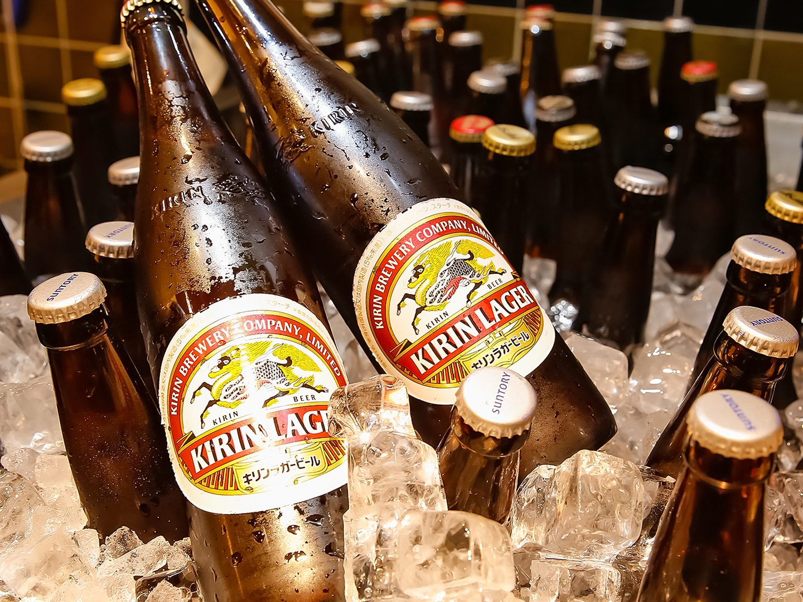
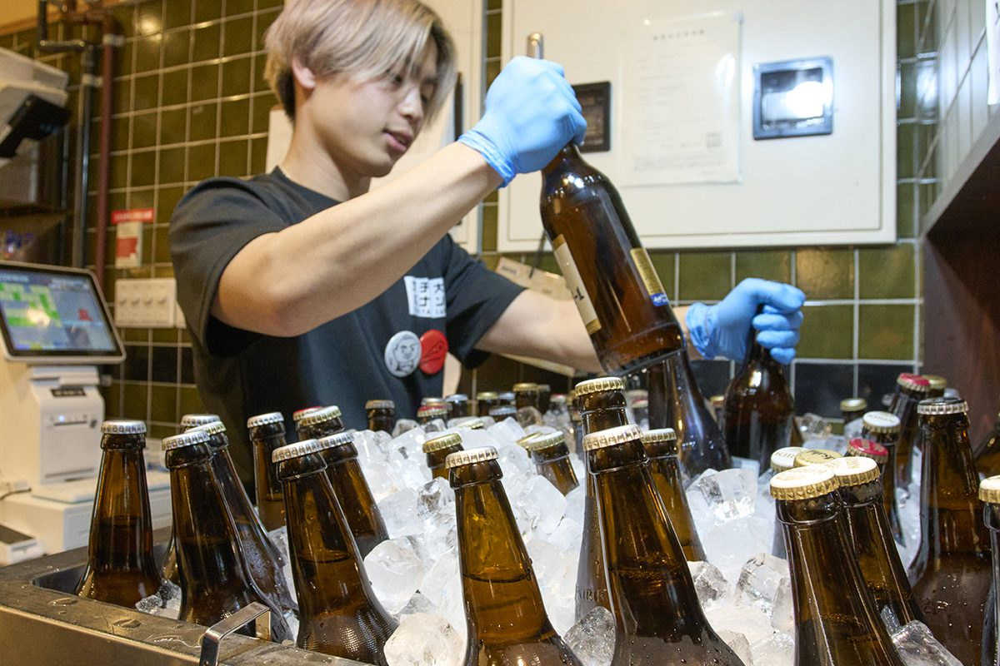
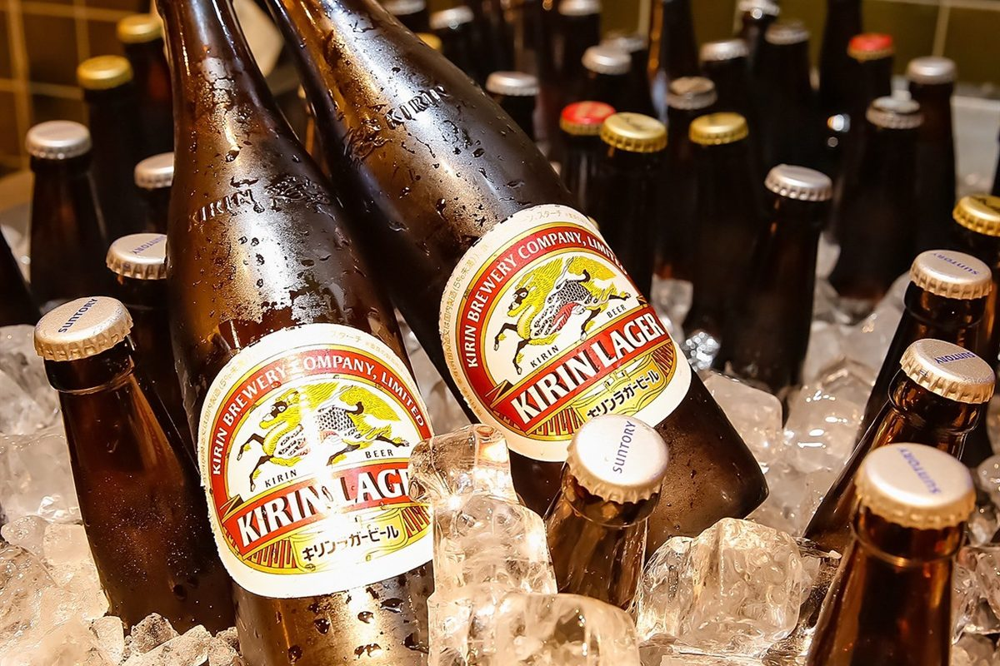

01 / BEER
氷水から、自分で引き上げる。
大旦那のビールは、店員が持ってきません。
店の氷水に沈んだ大瓶を、お客さん自身が引き上げます。
氷にどっぷり浸かった瓶は、手が痛くなるほど冷たい。
栓を抜いた瞬間に白い霧が立ちます。
グラスに注げば、泡がきめ細かく立ち上がる。
この一杯を飲むために、天満まで来る人がいます。
瓶ビール（大瓶）
通常 530円 320円
12:00 - 17:00
17時を1分でも過ぎると、1本あたり210円高くなります。